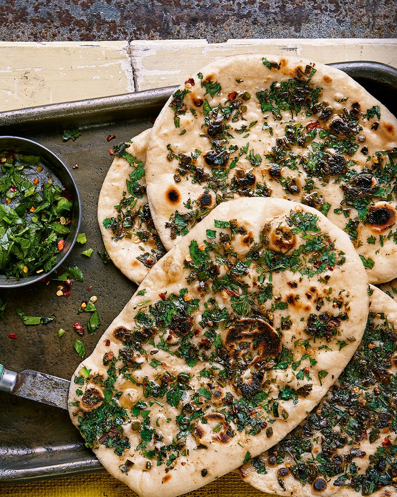

Chilli Naan

This is what your chilli naan should look like when complete
No cook soft naan recipe! All you need is a chutney to serve with these flavorful flatbreads.
You can also use these with your curry. Check out the recipes home page for that recipe!
Ingredients:
- 9oz Strong White Bread Flour
- 1 Packet Yeast
- 1/2 tsp Salt
- 1/2 tsp Sugar
- 1/2 tsp Chilli Powder
- 3.5 oz Natural Yogurt
- 2-3 oz Water
- 4 Green Chillies
- 1/2 tsp Ground Cumin
- 1/2 tsp Chaat Masala
- 1/2 tsp Chilli Flakes
Steps:
- Put the flour into a bowl. Add the yeast, salt, sugar, and chilli powder. Add the yogurt and oil and mix well.
- Add water to turn the mixture into a soft dough. Knead for 5 minutes and put the dough into a lightly oiled bowl, cover and let rest for one hour.
- Combine spices in a small bowl.
- Divide the dough into 8 portions. Take one portion at a time, roll it on a floured surface into an oval.
- Brush a bit of water on the naan and sprinkle some spice mix onto it.
- /heat a flat pan and cook naan on a low heat for 3 minutes. Turn over naan and cook on the other side for one minute.
- Remove the naan from the pan and serve warm